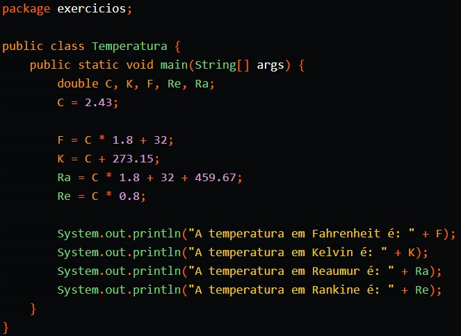
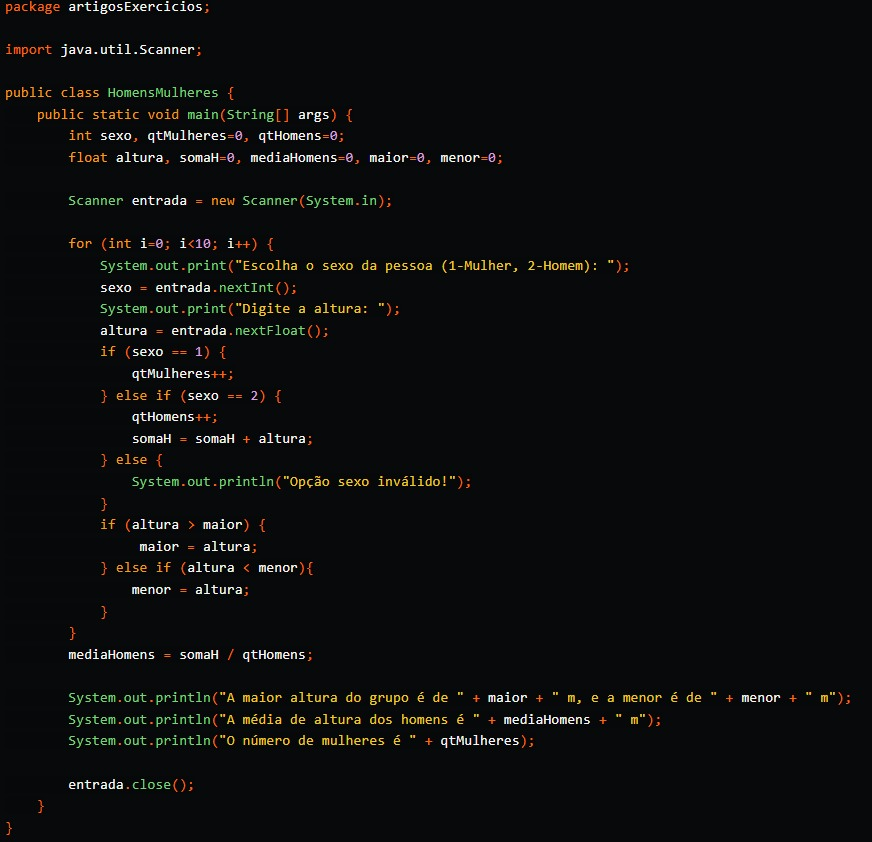

Exercícios Iniciantes #1
1. Escreva um programa que, com base em uma temperatura em graus celsius, a converta e exiba em Kelvin (K), Réaumur (Re), Rankine (Ra) e Fahrenheit (F), seguindo as fórmulas: F = C * 1.8 + 32; K = C + 273.15; Re = C * 0.8; Ra = C * 1.8 + 32 + 459.67
Solução:
Exercícios Iniciantes #2
2. Tem-se um conjunto de dados contendo a altura e o sexo (masculino, feminino) de 10 pessoas. Fazer um algoritmo que calcule e escreva: a. a maior e a menor altura do grupo; b. média de altura dos homens; c. o número de mulheres.
Solução
Exercícios Iniciantes #3
3. Criar um programa que calcule a média de salários de uma empresa, pedindo ao usuário a grade de funcionários e os salários, e devolvendo a média salarial.